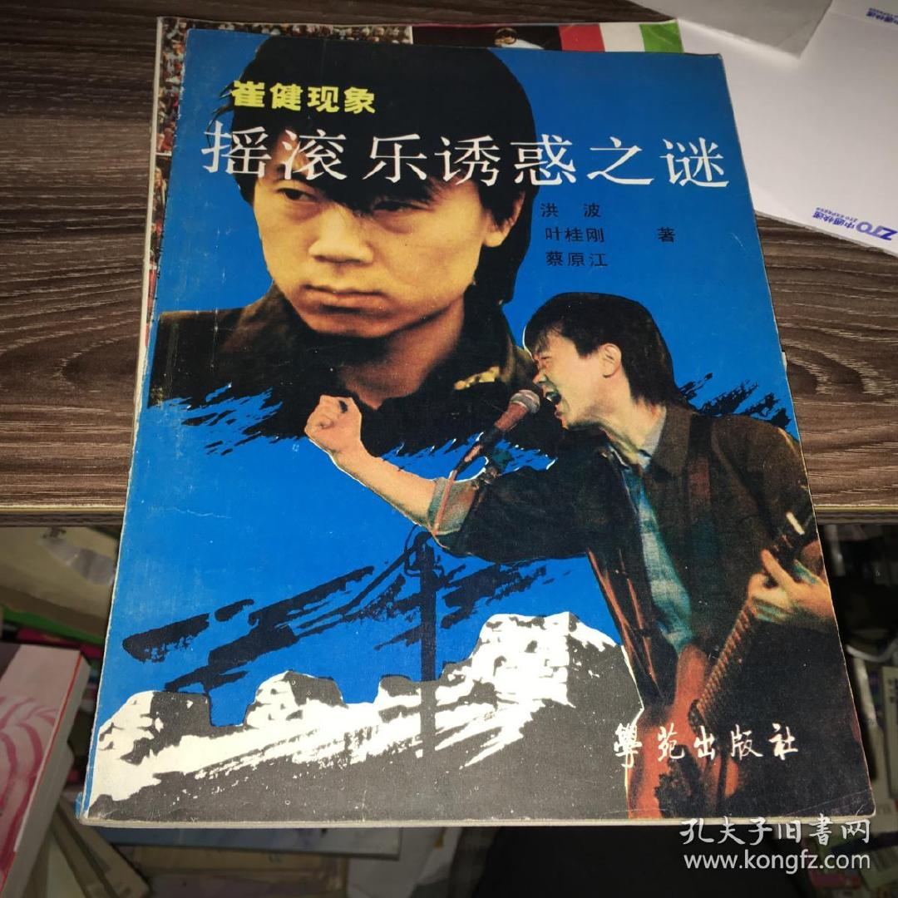

买过这套书，有王小峰的签名，放书架上当词典供着。  查看图片
查看图片

@王小峰_带三个表:
无意中在孔夫子上看到这本杂志，顿时陷入了深深的沉思。
你们都知道我编过一本《欧美流行音乐指南》，完全是因为这本崔健专题的杂志。那是1991年，我在北京东华门锡拉胡同（好多人都不知道这个胡同吧）等公交车，看到一个人推着自行车在路边卖杂志，车把上挂着的就是这本杂志。
要知道，在当时，能看到媒体上介绍摇滚乐的文字凤毛麟角，我一激动买了五本，送给听摇滚的朋友。当我回家仔细看，才发现，除了写崔健的那一部分是原创的，其他一半都是抄的（连原来杂志上的错误他们都没改），因为他们抄的文章我都看过，尤其是抄我一个朋友章雷写的文章让我很生气。我一怒之下，给其中的一个人写了一封信，抗议他们的无耻行为（现在抄袭是美德了吧），这个人回了封信，倒是很客气，说自己不懂摇滚，就是个书商（当时书商东拼西凑出本书是很正常现象，他们是今天新媒体公号的鼻祖）。他希望认识我和章雷，我没兴趣认识他，就把章雷的电话给了他，他找章雷弄了《欧美流行音乐指南》的前身，好像当时的名字叫《摇滚百科全书》。
章雷没弄完，就出国了，出国前把书稿转给了我，当时有79万字，当时有三拨人参与编写工作（广播学院、一外、二外外语比较好的老师），写得乱七八糟，我只好重新整理，拿掉了三十多万字，补充了一部分内容，最后第一版出来的时候，有136万字，麻痹的我青春最美好的时光全他娘的都交代在这本书上了，出版时还被世界图书出版公司给骗了，一分钱稿费也没拿到。
所以没事别看书，当个反智者多好，至少不会耽误七年青春。
这本书出来的过程我觉得都可以拍成一部电影了，其中蜿蜒曲折的故事既惊险又荒唐，等我腾出手的，一定写个剧本，我就不信拍出来不如《编舟记》好看。
这本书对我来说，只有一样东西——眼泪，我以前写过一篇文章，不嫌麻烦的人，可以到这里看看： 网页链接
网页链接
你们都知道我编过一本《欧美流行音乐指南》，完全是因为这本崔健专题的杂志。那是1991年，我在北京东华门锡拉胡同（好多人都不知道这个胡同吧）等公交车，看到一个人推着自行车在路边卖杂志，车把上挂着的就是这本杂志。
要知道，在当时，能看到媒体上介绍摇滚乐的文字凤毛麟角，我一激动买了五本，送给听摇滚的朋友。当我回家仔细看，才发现，除了写崔健的那一部分是原创的，其他一半都是抄的（连原来杂志上的错误他们都没改），因为他们抄的文章我都看过，尤其是抄我一个朋友章雷写的文章让我很生气。我一怒之下，给其中的一个人写了一封信，抗议他们的无耻行为（现在抄袭是美德了吧），这个人回了封信，倒是很客气，说自己不懂摇滚，就是个书商（当时书商东拼西凑出本书是很正常现象，他们是今天新媒体公号的鼻祖）。他希望认识我和章雷，我没兴趣认识他，就把章雷的电话给了他，他找章雷弄了《欧美流行音乐指南》的前身，好像当时的名字叫《摇滚百科全书》。
章雷没弄完，就出国了，出国前把书稿转给了我，当时有79万字，当时有三拨人参与编写工作（广播学院、一外、二外外语比较好的老师），写得乱七八糟，我只好重新整理，拿掉了三十多万字，补充了一部分内容，最后第一版出来的时候，有136万字，麻痹的我青春最美好的时光全他娘的都交代在这本书上了，出版时还被世界图书出版公司给骗了，一分钱稿费也没拿到。
所以没事别看书，当个反智者多好，至少不会耽误七年青春。
这本书出来的过程我觉得都可以拍成一部电影了，其中蜿蜒曲折的故事既惊险又荒唐，等我腾出手的，一定写个剧本，我就不信拍出来不如《编舟记》好看。
这本书对我来说，只有一样东西——眼泪，我以前写过一篇文章，不嫌麻烦的人，可以到这里看看：
- 